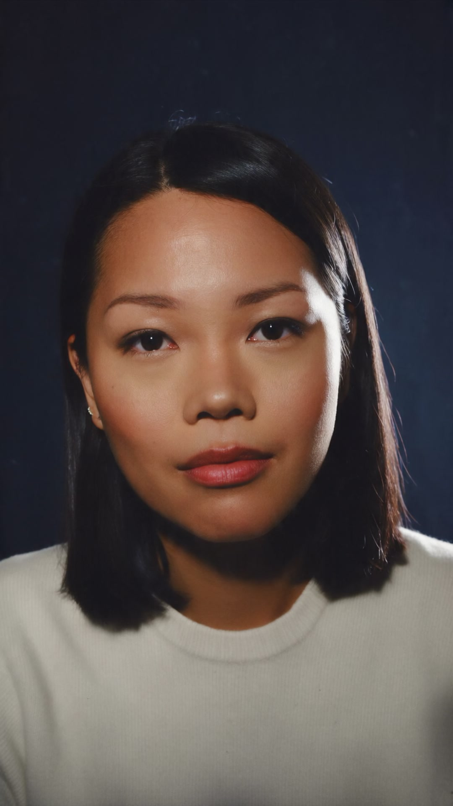
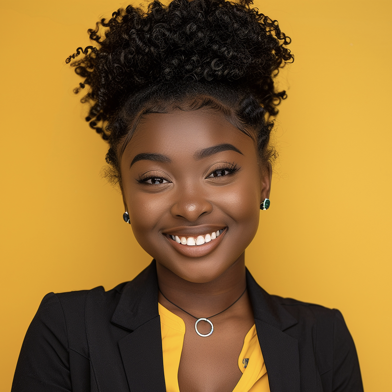

Send your
Digital Twin.
Is that a dealbreaker?

Sarah's Digital Twin
Recruiter · always on
Is that a dealbreaker?


Victoria Adeyemi2Is the role hybrid or remote?
How is quota set?
First 90 days?
Is there an equity refresh?
I've sold data infra, not HR tech. Is that a dealbreaker?
Is that a dealbreaker?
Not a dealbreaker.
Twin